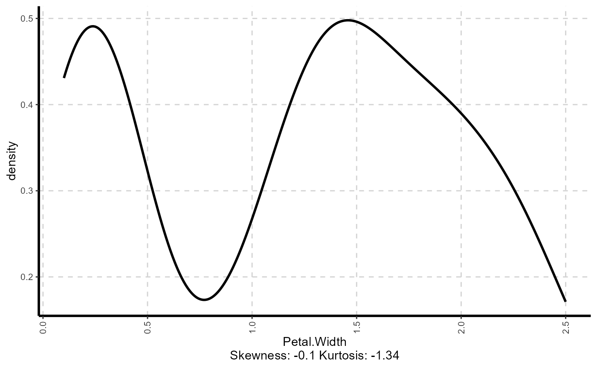

This function automatically scans through each variable and creates density plot, scatter plot and box plot for continuous variable using ggplot2 functions.
ExpNumViz( data, target = NULL, type = 1, nlim = 3, fname = NULL, col = NULL, Page = NULL, sample = NULL, scatter = FALSE, gtitle = NULL, theme = "Default" )
Arguments
| data | dataframe or matrix |
|---|---|
| target | target variable |
| type | 1 (boxplot by category and overall), 2 (boxplot by category only), 3 (boxplot for overall) |
| nlim | numeric variable unique limit. Default nlim is 3, graph will exclude the numeric variable which is having less than 'nlim' unique value |
| fname | output file name |
| col | define the fill color for box plot. Number of color should be equal to number of categories in target variable |
| Page | output pattern. if Page=c(3,2), It will generate 6 plots with 3 rows and 2 columns |
| sample | random selection of plots |
| scatter | option to run scatter plot between all the numerical variables (default scatter=FALSE) |
| gtitle | chart title |
| theme | adding extra themes, geoms, and scales for 'ggplot2' (eg: themes options from ggthemes package) |
Value
returns collated graphs in PDF or JPEG format
Univariate plotdensity plot for all the numeric data with the value of shape of the distribution (Skewness & Kurtosis)Bivariate plotcorrelatin plot for all the numeric dataBivariate plotscatter plot between continuous dependent variable and Independent variablesBox plotby overall sampleBox plotby stratified sample
Details
This function automatically scan each variables and generate a graph based on the user inputs. Graphical representation includes scatter plot, box plot and density plots.
All the plots are generated using ggplot2 pacakge function (geom_boxplot, geom_density, geom_point)
The plots are combined using gridExtra pacakge functions
targetis continuous then output is scatter plotstargetis categorical then output is box plottargetis NULL then density plot for all numeric featuresscatter = TRUEgenerate multiple scatter plot between all the independent contionuos variables with or without group argument
See also
Examples
## Generate Boxplot by category ExpNumViz(iris,target = "Species", type = 2, nlim = 2, col = c("red", "green", "blue", "pink"), Page = NULL, sample = 2, scatter = FALSE, gtitle = "Box plot: ")#>#>#> [[1]]#> #> [[2]]#>## Generate Density plot ExpNumViz(iris, nlim = 2, col = NULL,Page = NULL, sample = 2, scatter = FALSE, gtitle = "Density plot: ")#> [[1]]#> #> [[2]]#>## Generate Scatter plot by Dependent variable ExpNumViz(iris,target = "Sepal.Length", type = 1, nlim = 2, col = "red", Page = NULL, sample = NULL, scatter = FALSE, gtitle = "Scatter plot: ", theme = "Default")#> [[1]]#> #> [[2]]#> #> [[3]]#>## Generate Scatter plot for all the numerical variables ExpNumViz(iris,target = "Species", type = 1, nlim = 2, col = c("red", "green", "blue"), Page = NULL, sample = NULL, scatter = TRUE, gtitle = "Scatter plot: ", theme = "Default")#> [[1]]#> #> [[2]]#> #> [[3]]#> #> [[4]]#> #> [[5]]#> #> [[6]]#>